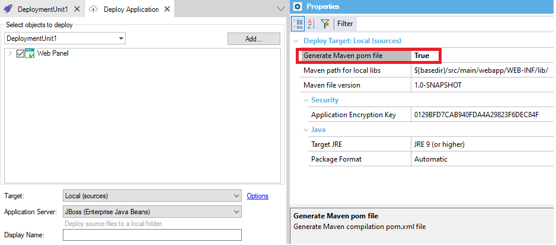

| False |
| True |
Level: Deploy Target Options
For Java models, within the Application Deployment tool, the Generate Maven pom file property is available when "Target = Local (sources)" is selected.
To generate the Maven pom.xml, GeneXus uses a template named Maven.pom.stg that is copied to the Knowledge Base directory. You can change that file by adding the plugins you need, as well as profiles, reference parent files, etc.
That template is a template group of StringTemplate which has the skeleton of an XML and references subtemplates that can be changed as needed.

This property is available since GeneXus 16 upgrade 4.
| Backlinks |
| Maven path for local libs property |